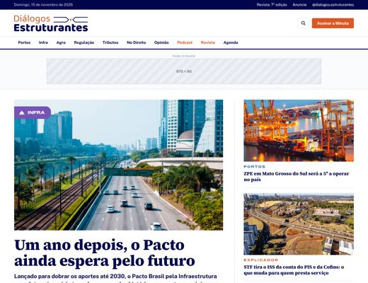
01
Home
Manchete com foto e selo da editoria, faixas coloridas por editoria como nas páginas da revista, podcast, opinião, revista, agenda e Minuta. A v2 junta todos os setores num só bloco logo após a manchete.
Anúncios: quatro níveis
Fontes, cores e componentes tirados da 7ª edição da revista: Source Serif nos títulos, Public Sans no apoio, Zalando Sans nos selos, e uma cor por editoria. Nas páginas com anúncio, o seletor no canto inferior direito troca entre os níveis leve, equilibrada, intensiva e hard (o dobro da intensiva).

01
Manchete com foto e selo da editoria, faixas coloridas por editoria como nas páginas da revista, podcast, opinião, revista, agenda e Minuta. A v2 junta todos os setores num só bloco logo após a manchete.
Anúncios: quatro níveis
02
Foto larga com o selo da editoria, título centralizado, capitular colorida, citação com aspas laranja e caixa do autor.
Anúncios: quatro níveis
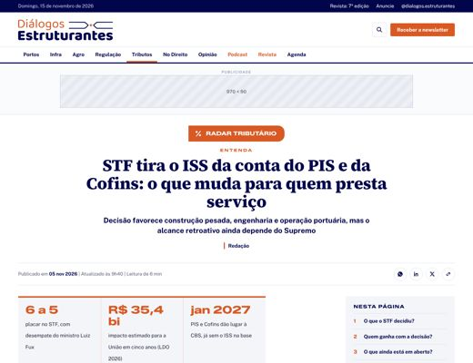
03
Formato "Entenda": perguntas numeradas com índice lateral, números em destaque e resumo no topo.
Anúncios: quatro níveis
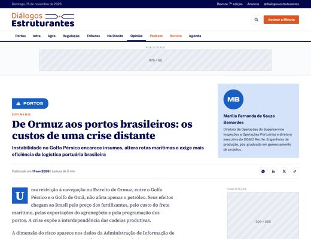
04
Autor e minibio em destaque ao lado do título, aviso de responsabilidade e outros artigos.
Anúncios: quatro níveis
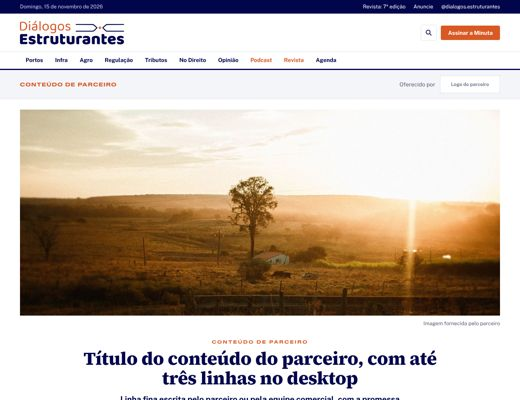
05
Faixa creme com “Conteúdo de parceiro”, logo do anunciante e aviso de transparência. Sem anúncios de terceiros.
Anúncios: sem anúncios
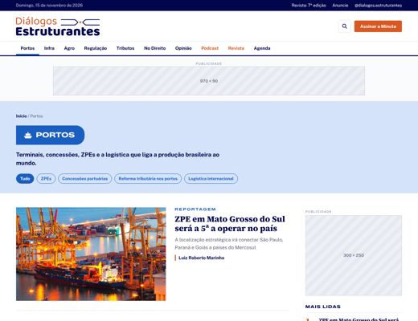
06
Faixa na cor da editoria, filtros por tema, destaque e lista paginada. Exemplo: Portos.
Anúncios: quatro níveis
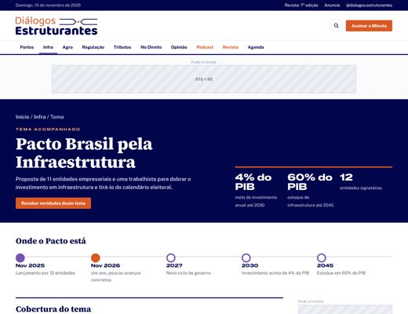
07
Página de acompanhamento com números-chave e linha do tempo. Exemplo: Pacto Brasil pela Infraestrutura.
Anúncios: quatro níveis
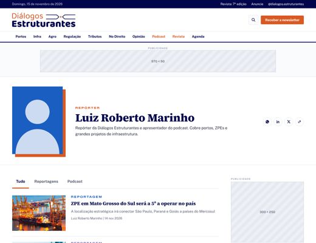
08
Perfil com bio, redes e todos os textos e episódios.
Anúncios: quatro níveis
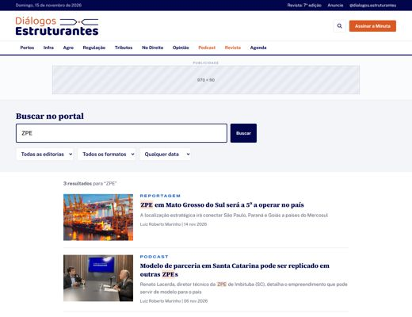
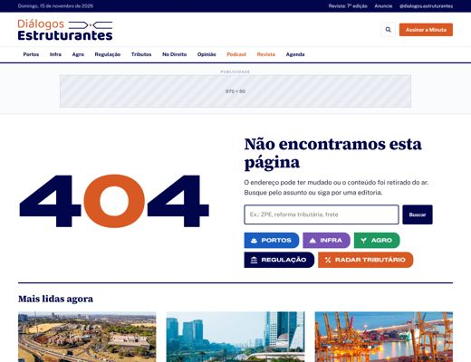
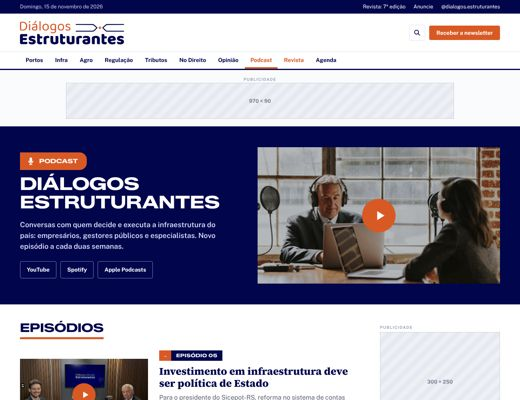
11
Capa do podcast com plataformas, lista de episódios e apresentador.
Anúncios: quatro níveis
12
Vídeo, apresentador e convidado como na revista, capítulos e transcrição.
Anúncios: quatro níveis
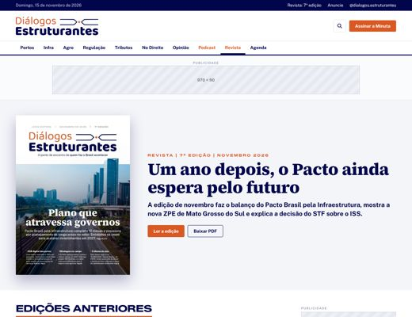
13
Edição atual em destaque e edições anteriores.
Anúncios: quatro níveis
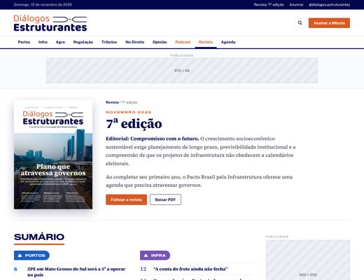
14
Capa, editorial e sumário por editoria com o número da página.
Anúncios: quatro níveis
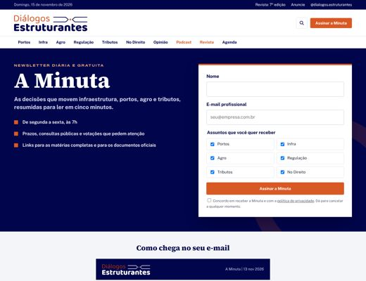
15
Nome provisório até a escolha do novo nome. Inscrição com escolha de assuntos, prévia da newsletter e perguntas frequentes.
Anúncios: sem anúncios
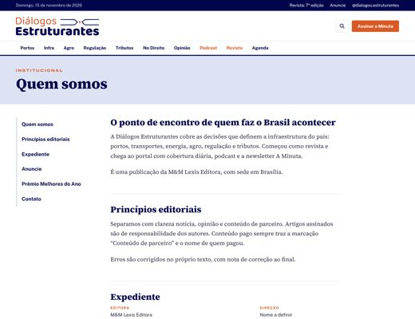
16
Quem somos, princípios editoriais, expediente, anuncie, prêmio e contato.
Anúncios: sem anúncios
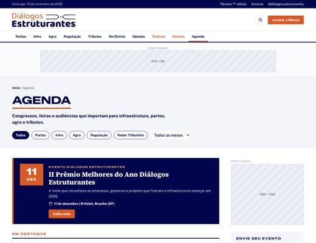
17
Evento institucional sempre no topo, depois os marcados como destaque e, em seguida, os demais por mês. Filtro por setor e mês.
Anúncios: quatro níveis
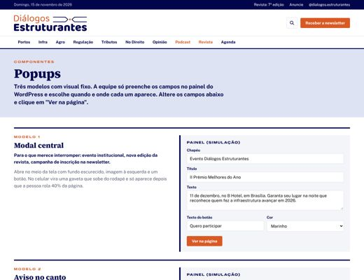
18
Modal central, aviso no canto e faixa no topo ou rodapé. Visual fixo: a equipe só edita textos, imagem, botão, quando e onde aparece. Dá para testar editando os campos.
Anúncios: componente
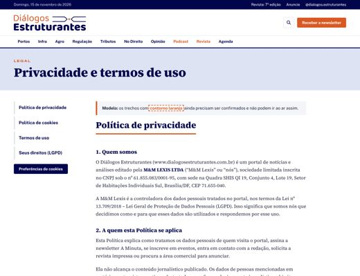